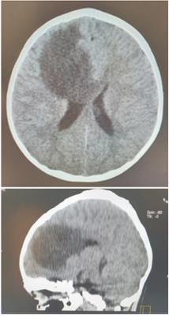
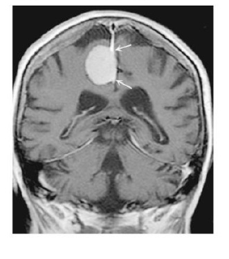

Sobre a predominância das neoplasias em pediatria de acordo com a idade e o sítio primário, assinale a alternativa correta.
É indicação absoluta de punção lombar diagnóstica a suspeita de:
Quanto à hidrocefalia, é INCORRETO afirmar:
O diagnóstico de lesões de tronco cerebral se ancora, iminentemente, na RMN, sendo que essa guia a conduta terapêutica. Embora estudos avaliando o diagnóstico de gliomas de tronco tenham mostrado resultados favoráveis para a biópsia, esta resultou em maior risco de complicações que a RMN. Assim está correto o item:
Menino com 4 anos de idade, chega ao pronto socorro acompanhado da mãe que refere que o mesmo acorda queixando- se de dor de cabeça seguida de vômitos, há 20 dias. Há dois dias com piora importante. Ao exame físico: regular estado geral, sonolento, abertura ocular apenas quando solicitado, resposta verbal confusa, localiza dor (escala de coma de Glasgow de 12). Frequência cardíaca 56 bpm, pressão arterial sistêmica 123 x 82 mmHg (braço esquerdo, manguito apropriado para idade, valor acima do percentil 95+12 para idade e estatura). Sem outras alterações ao exame físico. Qual a hipótese diagnóstica mais provável?
Criança, 2 anos, 15 kg, sexo masculino, trazida ao prontoatendimento em crise convulsiva com duração de 10 minutos, foi medicada com diazepam 2x com resolução da crise. Ao exame: REG, corado, hidratado, acianótico, anictérico. Temperatura: 36,9 0C. Glasgow 14, pupilas isocóricas e fotorreagentes, sem sinais de irritação meníngea, sem dé cits motores. Oroscopia e otoscopia normais. AP: murmúrio vesicular presente, sem ruídos adventícios. ACV: RCR 2T sem sopro. Abdome: ácido, indolor, sem massas ou visceromegalias, RHA +. Pulsos +, perfusão 2 segundos. Exames laboratoriais: Hb 12 / Ht 37 / Leuco: 8500 sem desvio / Plaquetas: 200 mil. PCR 4 (valor de referência 5). Na= 140. K= 4,9. Ca= 10. Mg 2,0. Gasometria arterial: pH 7,401 / pCO₂= 41 / pO₂= 98 / Bic= 23 / BE= 0,2 / Sat= 99% / Lactato= 1,0. Com adição aos dados, observe o TC de crânio sem contraste. Qual o provável diagnóstico?

Uma menina de 3 anos chega ao pronto-socorro infantil de um hospital municipal com quadro de cefaléia intensa acompanhada por vômitos há 3 dias, sem febre. Sua mãe tinha observado que, há 1 semana, ela estava mais quieta e colocava uma mão no olho para ver a programação da TV de casa. A criança não usa nenhum medicamento prévio à consulta no pronto-socorro e mora em região rural. Ao realizar exame físico, apresentou certo desequilíbrio ao deambular, força preservada nos membros e fundo de olho com papiledema. Nesse caso, o exame ideal para investigar a doença e o provável diagnóstico são, respectivamente,
Com relação à utilização da neuroimagem e eletroencefalografia em psiquiatria, é correto afirmar:
Menino, 5 anos de idade, vem à consulta por cefaleia e vômitos que iniciaram há 15 dias. Ao exame físico, apresenta edema de papila no fundo de olho, comprometimento dos pares cranianos (IX, X, XI e XII), hemiparesia espástica à direita com sinal de Babinski e déficit sensitivo em hemicorpo à direita. Com base nestes dados, o provável diagnóstico é:
Uma mulher de 58 anos é trazida à unidade de pronto atendimento por quadro de crise convulsiva, sem história prévia de epilepsia, uso de medicações ou doenças prévias. A tomogra a de crânio mostra múltiplas lesões supratentoriais, sugestivas de metástases. Diante do exposto, assinale a alternativa que apresenta o sítio primário mais provável das sugestivas metástases dessa paciente.
Paciente do sexo feminino, 48 anos, portadora de neoplasia maligna mamária avançada, é admitida no pronto-socorro por aparecimento de hemiparesia direita e crise convulsiva. Tendo em vista seu histórico e o quadro clínico atual, que exame de imagem deve ser executado para avaliação do sistema nervoso central?
Náuseas e vômitos são sintomas comuns nos cuidados paliativos e podem ter múltiplas causas. Em paciente com metástases cerebrais, o fármaco inicial melhor indicado para o tratamento das náuseas e vômitos é:
Um paciente de 42 anos de idade evolui com convulsões de início recente do tipo parciais complexas. Foi realizada uma tomogra a de crânio com contraste que evidenciou uma massa em lobo parietal direito, com contornos regulares, sugestivo de neoplasia primária. Durante a internação, foram efetuadas mais três tomogra as com contraste para verificar a existência de outros sítios de tumor cerebral. Após 72 horas de internação, apresentou piora da diurese com ureia = 280 mg/dL e creatinina = 1,4 mg/dL. Com base nesse caso clínico e nos conhecimentos médicos correlatos, julgue o item a seguir. A radioterapia nos tumores malignos do SNC pode ser utilizada.
Um paciente de 42 anos de idade evolui com convulsões de início recente do tipo parciais complexas. Foi realizada uma tomogra a de crânio com contraste que evidenciou uma massa em lobo parietal direito, com contornos regulares, sugestivo de neoplasia primária. Durante a internação, foram efetuadas mais três tomogra as com contraste para verificar a existência de outros sítios de tumor cerebral. Após 72 horas de internação, apresentou piora da diurese com ureia = 280 mg/dL e creatinina = 1,4 mg/dL. Com base nesse caso clínico e nos conhecimentos médicos correlatos, julgue o item a seguir. O tratamento de tumores do sistema nervoso central (SNC) é cirúrgico.
Um paciente de 42 anos de idade evolui com convulsões de início recente do tipo parciais complexas. Foi realizada uma tomogra a de crânio com contraste que evidenciou uma massa em lobo parietal direito, com contornos regulares, sugestivo de neoplasia primária. Durante a internação, foram efetuadas mais três tomogra as com contraste para verificar a existência de outros sítios de tumor cerebral. Após 72 horas de internação, apresentou piora da diurese com ureia = 280 mg/dL e creatinina = 1,4 mg/dL. Com base nesse caso clínico e nos conhecimentos médicos correlatos, julgue o item a seguir. Epidemiologicamente trata-se de craniofaringioma.
Mulher, 35 anos, apresenta cefaleia e hemianopsia bitemporal. Ressonância Magnética da Sela Turca demonstra lesão nodular hipocaptante de 2,5 cm de maior diâmetro, de localização selar, com extensão suprasselar, e compressão do quiasma óptico. O diagnóstico principal para esse quadro é:
Homem de 63 anos refere quadro de cefaleia há 6 meses. Inicialmente, a dor era leve, mas foi se tornando, progressivamente, mais intensa. Nesse período, notou algo errado com sua visão, pois, ao deambular, disse que tropeça em objetos que cam nas laterais. Nega febre, convulsões, doenças prévias, uso de medicamentos, etilismo ou tabagismo. Exame físico: orientado e corado; PA: 145 x 95 mmHg, FC: 65 bpm, T: 36,5 ºC; força muscular normal nos 4 membros; visual: hemianopsia bitemporal. A hipótese diagnóstica mais provável é
Um homem de 46 aos de idade é admitido na emergência após um acidente automobilístico. Ele insiste em dizer que não fez uso de álcool ou drogas e que não viu outro carro vindo em sua direção pelo seu lado direito. Não há alterações pupilares e apesar da acuidade visual normal, ele apresenta hemianopsia bitemporal. Qual a principal hipótese diagnóstica neste caso?
Pacientes com câncer no ápice do pulmão e extensão local para o estreito torácico podem ter dor no ombro e braços, síndrome de Horner e, ocasionalmente, parestesia na distribuição do nervo ulnar da mão (quarto e quinto dedos). Os pacientes com todas essas características podem ser classificados como tendo síndrome de Pancoast. Neste caso, a dor é procedente de quais raízes nervosas:
O acometimento primário do sistema nervoso central por linfoma é, mais provavelmente, do tipo:
Menino com 4 anos de idade é trazido à consulta devido a cefaleia, vômitos há 5 dias e di culdade na marcha há cerca de 3 meses. Ao exame, apresenta disartria, desequilíbrio na marcha, incoordenação motora na, tremor e nistagmo. No fundo de olho apresenta edema de papila. A provável etiologia para o quadro apresentado é:
Em relação às cefaleia secundárias assinale a opção CORRETA.
Os tumores cerebrais primários são um conjunto de neoplasias malignas originárias de células de sustentação do tecido nervoso. A gradação dos tumores é baseada em aspectos histopatológicos. Podemos considerar INADEQUADO que:
Um paciente de 47 anos de idade está com diagnóstico de um tumor cerebral, provavelmente maligno, localizado em região de difícil acesso cirúrgico, porém a cirurgia não está descartada. Está bem clinicamente. O médico deve:
Em qual faixa etária, o retardo no diagnóstico dos tumores cerebrais ocorre com mais frequência?
Em relação aos tumores de SNC, assinale a alternativa INCORRETA:
Antes de iniciar o tratamento oncológico, devemos realizar o estadiamento da doença, ou seja, avaliar possíveis locais de in ltração da neoplasia. Qual exame abaixo NÃO faz parte do estadiamento de um caso recém diagnosticado de Meduloblastoma de Fossa Posterior numa criança de 5 anos?
Escolar, sete anos, feminino, é trazida à emergência com vômitos e di culdade de car em pé. Tem história de cefaleia na região occipital, em aperto há dois meses, de forte intensidade e com aumento da frequência. Os episódios duram cerca de seis horas, ocorrendo frequentemente na madrugada e sem alívio com analgésicos. Exame físico: marcha atáxica e com dismetria; paralisia do sexto par bilateralmente. Nega febre. A hipótese diagnóstica mais provável é:
Com relação aos tumores do Sistema Nervoso Central, assinale a alternativa INCORRETA:
Um menino com 5 anos e 11 meses de idade faz seguimento de rotina em Unidade Básica de Saúde desde o nascimento, sem antecedentes morbidos relevantes. Em sua última consulta, há um ano, sua estatura era de 110 cm; na consulta atual está medindo 111 cm. Há 4 meses, passou a apresentar cefaleia holocraniana diária, de intensidade moderada a forte e di culdade visual. A avaliação oftalmolóogica revelou hemianopsia bitemporal. A principal hipótese diagnósticada para esse caso é
Paciente masculino, com 72 anos, hipertenso, alcoolista, refere que há 15 dias iniciou progressiva perda de força no dimídio esquerdo, que se iniciou como di culdade para deambular ("arrasta a perna"-sic) e evoluiu para o membro superior esquerdo. Família refere queixa de cefaleia persistente e sonolência. São diagnósticos mais prováveis, exceto:
O tumor primário mais comum no sistema nervoso central é:
Os meningiomas são tumores usualmente benignos de crescimento lento. A localização mais comum dos meningiomas intracranianos em adultos é:
A segunda neoplasia mais frequente na infância são os tumores cerebrais. Metade deles são de fossa posterior. O mais comumente encontrado é:
Nos casos de metástases cerebrais, geralmente o tumor primário está localizado com maior frequência no(s)(na):
Criança de 5 anos de idade chega a Unidade Básica de Saúde acompanhada da avó, com queixa principal de cefaleia e vômitos. Qual(is) o(s) sinal/sintoma(s) que sugerem a hipótese diagnóstica de tumor cerebral?
Paciente com tumor cerebral e sinais de hipertensão intracraniana, relata diplopia, turvação visual e impossibilidade de desviar os olhos lateralmente. Quais nervos cranianos estão comprometidos?
Grande fumante procura atendimento médico com quadro de ptose palpebral à esquerda, miose, enoftalmia e anidrose também do lado esquerdo, além de tosse crônica. O Rx do tórax mostra imagem de condensação no lobo superior do pulmão esquerdo. O diagnóstico compatível com esse caso é câncer de pulmão com síndrome
Paciente, sexo feminino, 58 anos, pele negra, fumante, sobrepeso, com histórico de vertigem posicional benigna, apresenta-se ao Pronto Socorro referindo "tontura", perda de sentido espacial, zumbido, perda auditiva leve e dores na região os ouvidos, pescoço e laringe. Refere outros episódios como o de hoje, mas nunca com essa intensidade. Abandonou o tratamento medicamentoso ministrado anteriormente por falta de recursos. No exame neurológico, o limiar para condução aérea e óssea da vibração de 256 Hz de um diapasão está aumentado no lado esquerdo. O diagnóstico mais provável é:
Criança de seis anos apresenta há duas semanas quadro de cefaleia holocraniana que vem piorando progressivamente, muitas vezes acordando à noite pela dor. Há dois dias, apresenta náuseas e vômitos (três episódios ao dia). A mãe refere história familiar para enxaqueca. Ao exame, a criança está em bom estado geral; FC = 85 bpm; PA = 110 x 60 mmHg; sem alterações aos exames cardiológico, respiratório e abdominal. O exame de fundo de olho evidenciou papiledema. A principal hipótese diagnóstica e as alterações que poderiam ser encontradas ao exame neurológico são, respectivamente:
Dentre as opções abaixo, todas são sindromes familiares associadas a tumores hipofisários, EXCETO:
Em estudos de necropsia, qual é o tumor que mais frequentemente apresenta metástases para o cérebro?
Com relação ao Ependinoma na infância, avalie os itens a seguir. I. Tumor suprasselar associado à puberdade precoce central; II. Tumor suprasselar associado à puberdade tardia; III. Pode estar associado à neurofibromatose tipo II; IV. Não responde à quimioterapia em crianças. Assinale a alternativa correta.
Homem, 70 anos, é trazido ao pronto-socorro devido quadro de crise convulsiva. A causa mais frequente nesta faixa etária é:
Paciente masculino, de 54 anos, em tratamento para hipertensão arterial, teve episódio de crise convulsiva generalizada. Foram realizados exames de imagem do sistema nervoso central. Caso a investigação completa mostre lesões cerebrais secundárias múltiplas, qual a conduta mais adequada?
AJM, 18 anos de idade, masculino, negro, sinistro, paciente previamente hígido, iniciou quadro de crises epilépticas parciais simples e complexas, sem febre, sem cefaleia, negou náuseas e vômitos. Ao exame neurológico: paciente consciente, orientado no tempo e no espaço, hemiparestesia em dimidio esquerdo. Negou antecedentes pessoal e familiar para epilepsia. Qual a principal hipótese diagnóstica?
Paciente feminina com 20 anos de idade e história de crises convulsivas frequentes nos últimos dois meses. É submetida à tomogra a computadorizada do crânio que demonstra múltiplas microcalci cações difusas pelo parênquima cerebral, sem outras alterações. O diagnóstico mais provável é:
A síndrome de Eaton-Lambert é uma das síndromes paraneoplásicas neurológicas mais comuns, afetando pacientes com tumor de pulmão de pequenas células que apresentam queixa de fraqueza proximal nas pernas, com melhora na força após vários segundos de contração voluntária sustentada. O diagnóstico pode ser feito por:
Uma criança de cinco anos de idade chega ao posto de atendimento acompanhada da avó com a queixa principal de cefaleia e vômitos. Quais sinais/sintomas que sugerem a hipótese diagnóstica de tumor cerebral?
Grande fumante procura atendimento médico com quadro de enoftalmia, miose e ptose palpebral à esquerda, além de tosse crônica. RX de tórax mostra imagem de condensação em lobo superior do pulmão esquerdo. O diagnóstico compatível com esse caso é câncer de pulmão com:
Os tumores cerebrais podem se manifestar clinicamente através de sintomas generalizados, que re etem a hipertensão intracraniana, ou por sintomas localizatórios, que refletem a localização do tumor. Coluna A: A – Lobo frontal; B – Corpo caloso; C – Ponte/bulbo; D – Mesencéfalo/pineal; E – Cerebelo; F – Ângulo pontocerebelar. Coluna B: 1 – Puberdade precoce; 2 – Espasticidade; 3 – Surdez ipsilateral; 4 – Distúrbios da marcha; 5 – Perda de memória; 6 – Nistagmo. Em relação às manifestações clínicas e à localização específica, ligue as colunas A e B corretamente:
Homem, 77 anos, tem convulsões e perda da consciência. Tomogra a computadorizada de crânio evidencia imagem nodular isodensa, localizada na região temporoparietal direita, edema perilesional e apagamento dos sulcos corticais, com impregnação anelar pelo meio de contraste. A provável causa da imagem é:
Na enfermaria de clínica médica, está internada eletivamente mulher de 55 anos, hipertensa, para investigação de massa na base direita do pulmão descoberta em radiogra a de tórax realizada no periódico de sua empresa. O mesmo exame revela, ainda, imagens líticas das vértebras lombares. A paciente faz uso de anlodipino 5 mg/dia e losartana 100 mg/dia, e é tabagista de 70 maços/ano, ainda sem interrupção. No terceiro dia de internação, apresenta sonolência, com lentidão e di culdade em atender a comandos, mas sem sinais de irritação meníngea, febre ou de cit neurológico motor em membros. Exames laboratoriais mostram hemoglobina = 9,6 g/dl; leucometria = 8500 céls/mm³; plaquetas = 150 mil/mm³; glicose = 75 mg/dl; ureia = 50 mg/dl; creatinina = 1,2 mg/dl; TGP = 32 UI/L; TGO = 38 UI/L; proteína C-reativa = 4,5 mg/dl; sódio = 128 mEq/L e potássio = 4,0 mEq/L. A conduta mais apropriada, tendo em vista o quadro descrito, é:
São tumores cerebrais primários que calcificam comumente:
O anticorpo que deve estar associado à síndrome paraneoplásica cerebelar é:
Uma mulher de 37 anos queixa-se de cefaleia, visão borrada durante um ano e está piorando lentamente. Como parte da avaliação, o clínico solicitou uma ressonância magnética que mostrou: (VER IMAGEM) Qual é o diagnóstico desse paciente?

Qual o tumor primário mais comum do Sistema Nervoso Central?
Paciente masculino, 55 anos, apresenta crise convulsiva. Durante investigação, RNM revela lesão temporal sugestiva de metástase. Qual o mais provável sítio primário?
Considere o caso clínico a seguir para responder à próxima questão. Homem de 40 anos, com queixa de diminuição da audição do ouvido esquerdo há 1 ano; há 2 meses, di culdade para fechar o olho esquerdo e há 3 dias, cefaleia e vômitos. Ao exame, colocando-se o diapasão sobre a linha média do crânio, o paciente sentia a vibração apenas no lado direito. Não conseguia fechar o olho esquerdo e a sensibilidade da córnea estava diminuída. Havia manchas de café au lait difusas pelo corpo. O líquor desse paciente deverá revelar, tipicamente: Respostas: 1 12 23 34 45 56